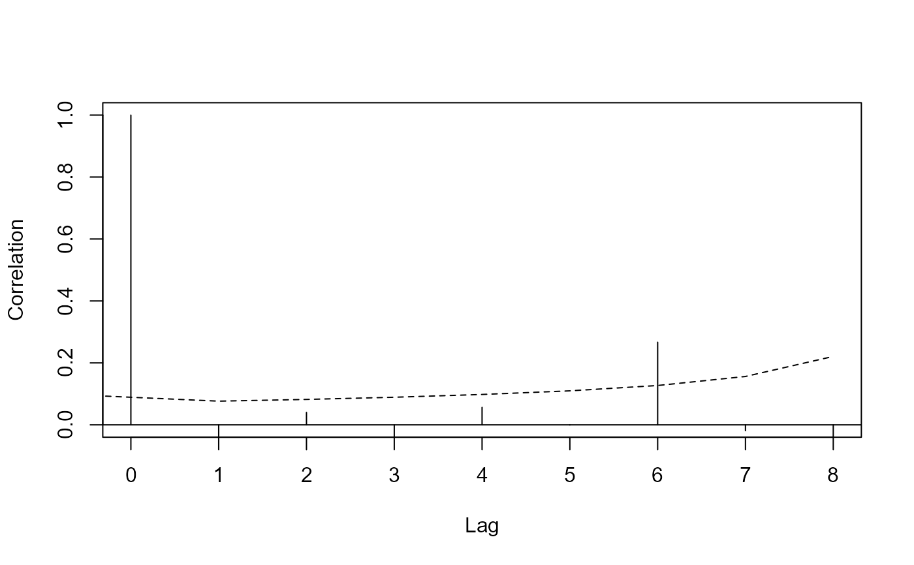

Once a DSM has been fitted to data, this function can be used to check for autocorrelation in the residuals.
Usage
dsm_cor(
dsm.obj,
Transect.Label = "Transect.Label",
Segment.Label = "Segment.Label",
max.lag = 10,
resid.type = "scaled.pearson",
fun = cor,
ylim = c(0, 1),
subset = "all",
...
)Arguments
- dsm.obj
a fitted dsm object.
- Transect.Label
label for the transect (default:
Transect.Label). Using different labels can be useful when transects are split over geographical features or when transects are surveyed multiple times.- Segment.Label
label for the segments (default:
Segment.Label).The result of callingordermust make sense.- max.lag
maximum lag to calculate at.
- resid.type
the type of residuals used, see
residuals.gam. Defaults to"scaled.pearson"in the GAM case and"normalized"in the GAMM case (which are equivalent).- fun
the function to use, by default
cor, must take two column vectors as arguments.- ylim
user defined limits in y direction.
- subset
which subset of the data should the correlation function be calculated on?
- ...
other options to pass to
plot.
Details
Within each Transect.Label, segments will be sorted
according to their Segment.Labels. This may require some time to get right
for your particular data. If one has multiple surveys where transects are
revisited, for example, one may want to make Transect.Label a unique
transect-survey identifier. Neither label need to be included in the model,
they must just be present in the $data field in the model. This usually
means that they have to be in the segment data passed to dsm.
The current iteration of this function will only plot correlations nicely, other things are up to you but you can get the function to return the data (by assigning the result to an object).
If there are NA values in the residuals then the correlogram will not be
calculated. This usually occurs due to NA values in the covariates (so the
smoother will not have fitted values there). Code like
any(is.na(dsm.obj$data)) might be helpful.
Examples
# \donttest{
library(Distance)
#>
#> Attaching package: 'Distance'
#> The following object is masked from 'package:dsm':
#>
#> dummy_ddf
#> The following object is masked from 'package:mrds':
#>
#> create.bins
library(dsm)
# load the data, see ?mexdolphins
data(mexdolphins)
# fit a model
hr.model <- ds(distdata, truncation=6000,
key = "hr", adjustment = NULL)
#> Fitting hazard-rate key function
#> AIC= 677.433
#> No survey area information supplied, only estimating detection function.
mod1 <- dsm(count~s(x,y), hr.model, segdata, obsdata)
#> Warning: Some observations are outside of detection function 1 truncation!
# look at lag 1 differences up to a maximum of lag 9, using deviance
# residuals
dsm_cor(mod1, resid.type="deviance", max.lag=9,
Segment.Label="Sample.Label")

# }